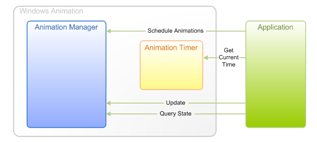
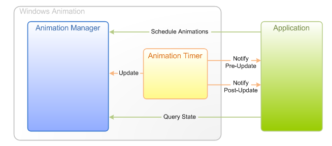
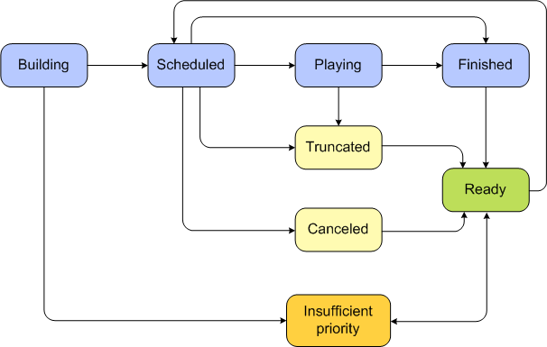

title: Windows Animation Overview description: This overview provides an introduction to the Windows Animation Manager and focuses on key components and concepts. ms.assetid: de1380c9-6801-4178-9281-a23af7d71d77 keywords:
This overview provides an introduction to the Windows Animation Manager and focuses on key components and concepts. For more information on storyboards and transitions, see Storyboard Overview.
This topic contains the following sections:
Animation is a sequence of successive still images that produces an illusion of movement when played back. Using interactive animation in its user interface can give an application a unique personality as well as improve the user experience. Animation can help to communicate major state changes in the user interface and help to manage the complexity of the user interface. Animation can also add to the user's perception of the quality of an application.
As examples, Windows Animation is used in the taskbar to help you manage and access files and programs, and Magnifier to enlarge different parts of the screen to make them easier for users to see.
The fundamental units of an animation are the characteristic of a visual element to be animated and the description of how that characteristic changes over time. An application can animate a wide variety of characteristics such as position, color, size, rotation, contrast, and opacity.
In Windows Animation, an animation variable represents the characteristic to be animated. A transition describes how the value of that animation variable changes as animation occurs. For example, a visual element might have an animation variable that specifies its opacity, and a user action might generate a transition that takes that opacity from a value of 50 to 100, representing an animation from semi-transparent to fully opaque.
A storyboard is a set of transitions applied to one or more animation variables over time. An application displays animations by constructing and playing storyboards and then drawing sequences of discrete frames as the values of animation variables change over time.
Windows Animation consists of the following components:
animation manager
Applications use an animation manager object to create animation variables and storyboards, schedule and control animations, and update state information before the application draws each frame. A single animation manager object typically manages all animations across an application and therefore has global control over all scheduled storyboards.
animation variables
Before starting any animations, an application needs to create animation variable objects. An animation variable represents one aspect of a visual element to be animated. The variable is a scalar floating-point value, although the value can be rounded to an integer value.
An animation variable typically has the same lifetime as the visual element it is to animate. The initial value of an animation variable is specified when the variable is created. Thereafter, its value cannot be changed directly; it must be updated through the animation manager.
An animation variable can be identified by a tag, which is a pairing of an integer identifier with a pointer to a COM object. A tag need not be unique, unless the application uses it to search for a variable. By default, an animation variable does not have a tag, and any attempts to read its tag will fail until one has been set.
timing system
Windows Animation includes a timing system that helps to ensure that animations are rendered at a frame rate that is smooth and consistent, while also reducing the use of system resources for rendering when the system is busy. A timer helps to manage animation rendering by automatically indicating the passage of a small unit of time, called a tick. The timing system monitors overall system rendering performance and throttles animations by dynamically increasing or decreasing the frequency of ticks. Applications can let a timer drive the animation manager and can register a handler to be notified before and after the manager is updated for each tick. Applications can specify the minimum acceptable animation frame rate for a timer and be notified if an animation's actual frame rate falls below this rate.
To conserve system resources, a timer can be configured to disable itself when no animation is taking place.
The Windows Animation API is a single-threaded COM-based API that provides the following features for developers:
For the complete API reference, see Windows Animation Reference. For example code, see Windows Animation Tasks and Windows Animation Samples.
Applications must get the current time before scheduling a new animation. The following are the timing mechanisms supported by Windows Animation:
Applications using a hardware-accelerated graphics API can synchronize with the monitor refresh rate to render smooth animations. Alternately, an application may use a timing mechanism of its own to determine when to draw each frame of an animation. In either case, the application will tell the animation manager when to update its state. An animation timer can still be used to determine the current time with high precision, in the units required by the animation manager.
The following diagram shows the interactions between an application and the Windows Animation components when the application is driving animation updates directly.

In the simplest configuration, an application will redraw everything every time the screen is refreshed, even when no animations are playing. To avoid wasted work, an application can register a manager event handler to be notified when there are animations scheduled, and can detect when the schedule is empty so that it can stop redrawing.
Rather than updating the animation manager directly, applications may let the animation timer tell the animation manager when to update its state, and simply be notified when each update has taken place. This approach is recommended for older graphics APIs. In general, if it is possible to synchronize with the monitor refresh rate, it is better to do so and use application-driven animation.
The following diagram shows the interactions between an application and the Windows Animation components when the animation timer is driving animation updates.

The timer can be configured to run only when the animations are scheduled; doing so is a simple matter of passing a particular parameter when the timer and animation manager are connected.
Beyond a basic foundation to support animation, Windows Animation includes support for several advanced animation techniques, including:
context-sensitive duration
The duration of a transition need not be fixed; it can be determined based on the value and velocity of the animated variable when the transition begins.
velocity matching
Movement is generally more pleasing to the eye if a moving object's position and velocity do not jump instantaneously between values. When a new storyboard interrupts one that is currently playing, velocity matching enables the new storyboard to pick up smoothly where the previous one ended.
contention management
If two storyboards need to update the same animation variable simultaneously, a scheduling conflict occurs. Rather than requiring a specific numeric priority for each storyboard, Windows Animation enables the application to determine the relative priorities of any two storyboards.
Developers can implement a priority comparison callback to compare the priority of the storyboard of being scheduled and the storyboard that is already in the schedule. An application implementing a priority comparison can use any preferred logic to determine when a storyboard pre-empts another. To resolve the scheduling conflict, Windows Animation asks the application which of these actions may be taken, in the following order:
If none of the above actions is allowed by the registered priority comparison objects, the attempt to schedule the new storyboard fails. By default, all storyboards can be trimmed, concluded, or compressed to prevent failure, but none can be canceled.
The following diagram shows the life cycle of a storyboard, using the states defined by the UI_ANIMATION_STORYBOARD_STATUS enumeration. Applications use the Windows Animation API to build a storyboard and submit it for scheduling. The animation manager schedules the storyboard and manages the animation.

For more information on storyboard scheduling and management, see Storyboard Overview.
Â
Â